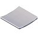

Types of track materials

Concrete road
Dirt road
Grass road
Ice road
Magnet road
Plastic road


Concrete road
Dirt road
Grass road
Ice road
Magnet road
Plastic road
There are different types of materials in Trackmania, all with there own behaviors. Concrete is a regular type of road, and most react like how a car would. Dirt roads have less grip and require the least amount of steering for maximum speed. The grass is similar to dirt with even less grip. Ice has almost no grip and requires the driver to turn 90 degrees and counter-steer to perform an ice slide. Magnet roads allow the driver to ride on walls and even ceilings. Plastic has the exact grip as dirt but different, more difficult acceleration behaviors.